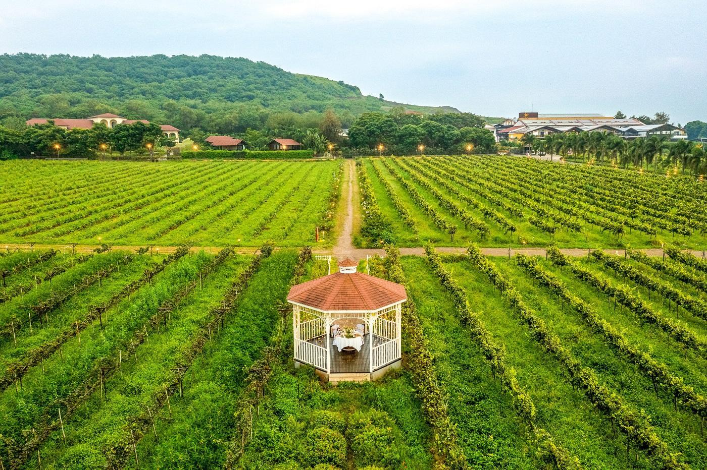
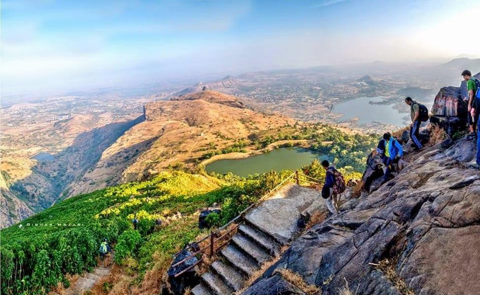
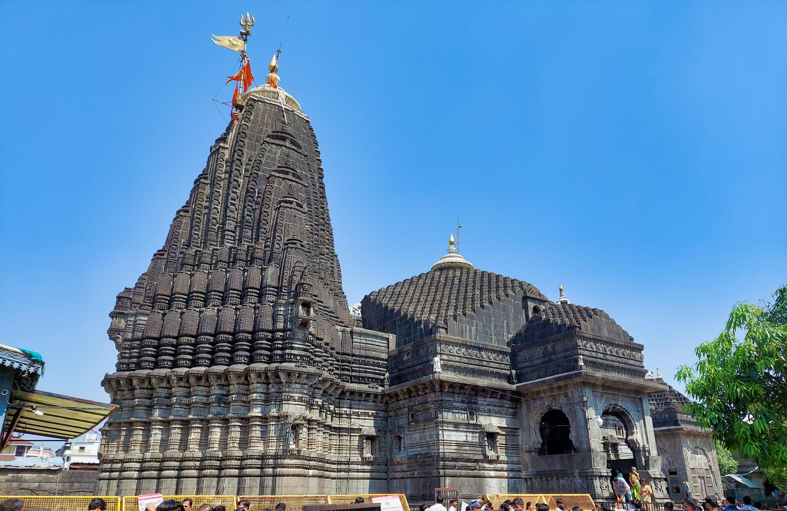
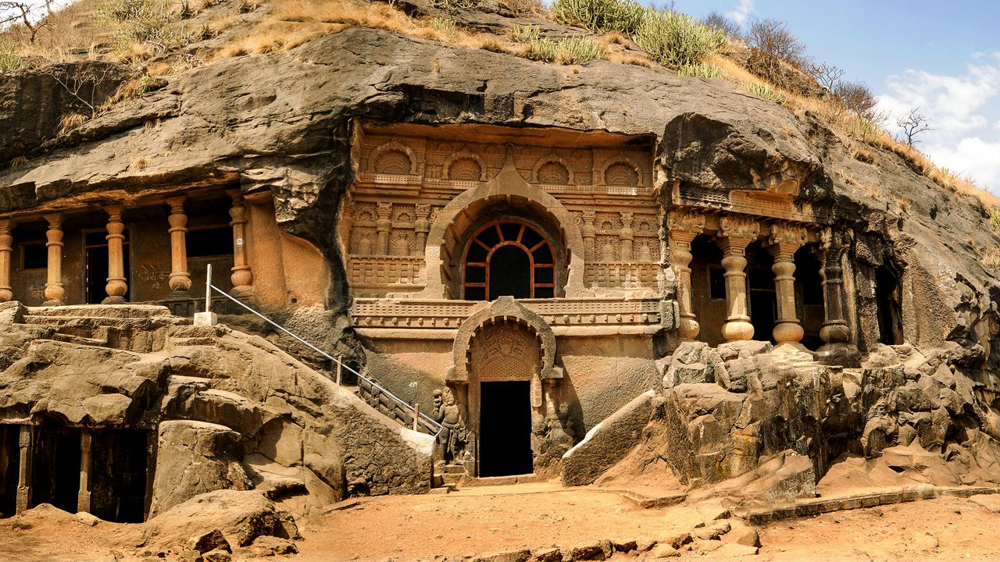

Sula Vineyards
Enjoy scenic vineyard landscapes and nature.
WELCOME TO MAHARASHTRA
Explore beautiful temples, peaceful hills, historical places and amazing natural destinations in Nashik.
Explore Places
Nashik is famous for its religious heritage, vineyards, scenic landscapes and historical attractions. It is a wonderful destination for families, nature lovers and travellers.

Enjoy scenic vineyard landscapes and nature.

Discover one of the famous Jyotirlinga temples.

Explore ancient Buddhist rock-cut caves.